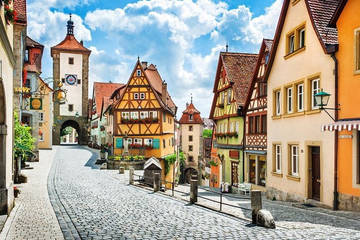

The Black Forest

The beautiful Black Forest with its dark, densely-wooded hills is one of the most visited upland regions in all of Europe. Situated in the southwestern corner of Germany and extending 160 kilometers from Pforzheim in the north to Waldshut on the High Rhine in the south, it's a hiker's heaven. On the west side, it descends steeply to the Rhine, crossed by lush valleys, while on the east, it slopes more gently down to the upper Neckar and Danube valleys. Popular spots include Germany's oldest ski area at Todtnau, the magnificent spa facilities of Baden-Baden, and the attractive resort of Bad Liebenzell.
The Island of Rügen
Rügen is the largest and most beautiful of the German Baltic islands. Separated from the rest of Germany by the Strelasund, it's linked to the mainland town of Stralsund by a causeway. The island's beauty stems from its diversity of landscape, including everything from flat farmland and forest-covered hills to expansive sandy beaches, lagoons, and lovely peninsulas. A fun thing to do here, especially for outdoor enthusiasts, is to pay a visit to the Jasmund Peninsula, which in places reaches heights of 161 meters. Here, you'll find Jasmund National Park, popular among nature lovers for its abundance of wildlife, with notable species found here, including rare white-tailed eagles.
Rothenburg ob der Tauber
The old Franconian imperial city of Rothenburg is one of the most attractive places to visit on Germany's famous Romantic Road tourist route. Located on the steep banks of the picturesque River Tauber, it's notable for its walls and towers, untouched since the Thirty Years War of 1618. This completely preserved, picture-perfect medieval town offers endless charm. One of the most popular things to do in Rothenburg ob der Tauber is to join a walking tour (or do it yourself); get started by picking up a map from one of the tourism offices located in the town.
Zugspitze Massif
The Zugspitze is also an attractive destination for non-skiers in winter: Right at the top, an impressive 360° panorama opens up to reveal extensive views over 400 mountain peaks in four countries. The Zugspitze-Exhibition enhances visitors’ awareness of the historical developments of Germany’s most famous mountain. Three toboggan runs, Germany’s highest church, an igloo village and excellent mountain restaurants are reason enough for smiling faces. Only while sunbathing on the inviting deckchairs may you find that your eyelids droop for a well-earned snooze.
Munich's Marienplatz
Marienplatz was named after the Mariensäule, a Marian column erected in its centre in 1638 to celebrate the end of Swedish occupation. Today the Marienplatz is dominated by the New City Hall (Neues Rathaus) on the north side, and the Old City Hall (Altes Rathaus, a reconstructed gothic council hall with a ballroom and tower) on the east side.
Berlin

Berlin contains three World Heritage Sites: Museum Island; the Palaces and Parks of Potsdam and Berlin; and the Berlin Modernism Housing Estates.[25] Other landmarks include the Brandenburg Gate, the Reichstag building, Potsdamer Platz, the Memorial to the Murdered Jews of Europe, the Berlin Wall Memorial, the East Side Gallery, the Berlin Victory Column, Berlin Cathedral and the Berlin Television Tower, the tallest structure in Germany. Berlin has numerous museums, galleries, libraries, orchestras, and sporting events. These include the Old National Gallery, the Bode Museum, the Pergamon Museum, the German Historical Museum, the Jewish Museum Berlin, the Natural History Museum, the Humboldt Forum, the Berlin State Library, the Berlin State Opera, the Berlin Philharmonic and the Berlin Marathon.